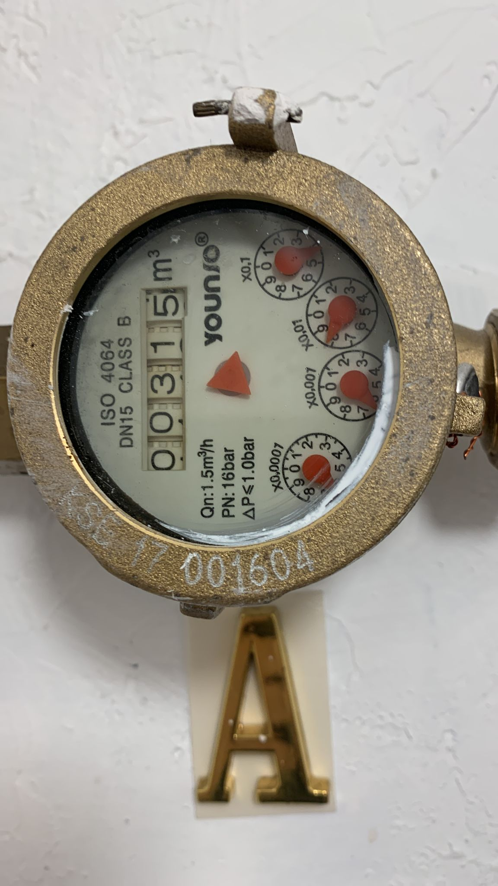

ESP32-CAM Digital Meter Reader
Press take photo to get image from ESP32-Cam, then press check photo to display image.

| Crop-Left | Crop-Top |
|---|---|
| Crop-Width | Crop-Height |
Press take photo to get image from ESP32-Cam, then press check photo to display image.
| Crop-Left | Crop-Top |
|---|---|
| Crop-Width | Crop-Height |